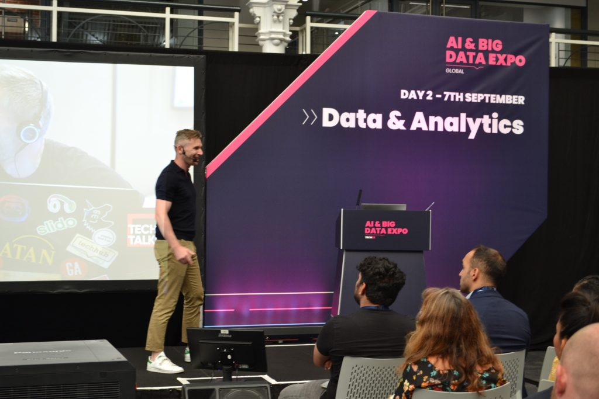

AI & Big Data Expo 2021: Ethics, myths and making sense of data
The global AI market is predicted to snowball over the next few years, reaching a $190.61 billion market value in 2025. By 2030,
AI will lead to an estimated $15.7 trillion, or 26% increase in global GDP.
Industry analyst firm Gartner has also predicted that by 2022 companies will have an average of 35 AI projects in place.
Of all the end-use industries, the market for manufacturing is expected to grow the fastest. Increasing data volume
derived from the manufacturing value chain has led to the involvement of AI-enabled data analytics in the manufacturing
sector. In addition, several industry initiatives, such as Industry 4.0, a connected manufacturing initiative
by the Government of Germany, have proliferated the growth of AI-enabled devices in manufacturing.
Businesses have also noted that automating tasks, such as invoicing and contract validation, is a crucial use of AI.
Meanwhile, 80% of retail executives expect their companies to adopt AI-powered intelligent automation by 2027. The most
prominent use case for AI in the retail industry is customer engagement (chatbots, predictive behavior analysis,
hyper-personalization).
On the downside, a lack of trained and experienced staff is an expected restriction in the AI market’s growth.
At the AI & Big Data Expo in London this week, all the opportunities and challenges
surrounding AI and big data were keenly debated.
The event, part of TechEx Global exhibition and conference, showcased some of next-generation technologies and strategies,
and offered an opportunity to explore and discover the practical and successful implementation of AI & Big Data in driving forward
business for a smarter future.
Of all the talking points over the two-day event, some of the more prominent discussions focused on the myths and misunderstanding
of AI, as well as ethics, algorithms and how companies are coping with vast quantities of data.

Data and analytics
Dispelling the AI myths
Speaking at the event, Myrna Macgregor, head of machine learning – strategy (acting) & lead, responsible for AI+ML at the BBC,
said: “It’s important to think about what the challenges are. There are some barriers, obviously. Firstly, the technical point.
Very technical terminology is often used in conversation regarding AI and coding algorithms.And these are things that are unfamiliar
to some of the stakeholders you’re going to be working with.
“Secondly, there are a lot of theories about how AI is going to take jobs. That a large percentage of jobs will disappear
in the next 10 to 20 years, and that’s really unhelpful. AI, as an assistive technology, is a tool to help people do that
work.
“Also, a lot of people think that AI is an easy thing to do. There is a perception, perhaps, that AI is something you
can grab off the shelf and throw at problems, or you can just sprinkle a little AI on problem.”
Ethics and responsibility
Macgregor said: “Ethics and responsibility are not a category unto themselves. You have to think about what you’re trying
to achieve from a societal level, but also your existing organisational values and mission, and integrating that into the
technology you’re building. It’s not starting from scratch.
“I think the main ingredients of responsibility are to avoid negative inference, building something that works, and
maybe most importantly, building something that works for home users. And that kind of corresponds to how we think
about the BBC – the universality aspect, as well. And I think the two things you need ub order to achieve that are
thoughtfulness – taking a pause and thinking about the impact of what you’re building – and also collaboration.
“It’s important to bring in different stakeholder perspectives, so that you’re really reflecting that collaboration
and different perspectives. From a BBC perspective, responsibility looks like upholding the values that we have as
an organisation. So I independence and impartiality are very important to us in an immediate context.”
Robustness of algorithms
Ilya Feige, director of AI, Faculty, commented: “There’s general intelligence and super intelligence. And there’s a
whole topic there that people worry about a lot, rightfully. But right now, what organisations really need to have
answers to is fairness, explainability, privacy and robustness.
“I feel like the first three are kind of well understood, I assume everyone’s talked about, or read about them a lot.
But maybe robustness is the one least discussed openly, and it’s sort of the endeavour to know when you can trust
your algorithm, or when you can have confidence in it. So where is it likely to go wrong? And there are a bunch of
different ways that can take place, like, my data distribution has changed and so the model is no longer relevant.
It used to be good, but now it’s not.
“And there are other examples like parts of data space, where the model is just catastrophically bad, or even attacks.
So there are examples of ways in which you can attack algorithms and provide data that fools algorithms. So robustness
is a big topic that’s discussed less fairness, privacy and explainability.”